Welkom!
Op deze website kun je meer informatie vinden over de vragenlijst die u invult met betrekking tot de meldkamer. Hieronder ziet u heel wat links waar u op kunt klikken. Deze hebben meestal ook de naam van de vraag zoals deze in de enquête staat. Wanneer u hier op klikt, zal u tekst, foto's,... vinden die de vraag hopelijk meer verduidelijken. Als test kun je hieronder bv. eens een keer klikken op "Klik hier voor een test!".
1 scherm:
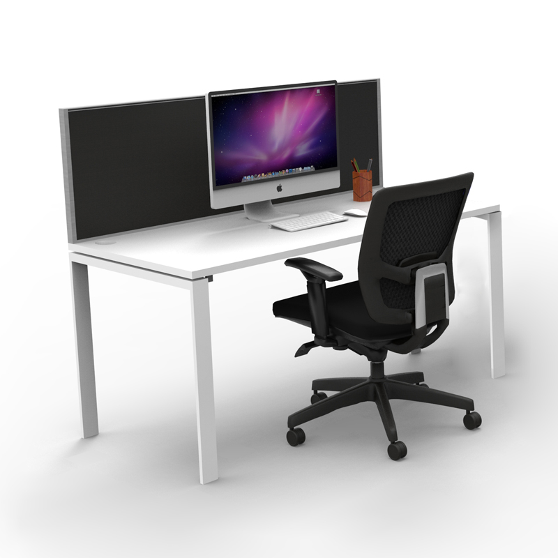2 schermen:
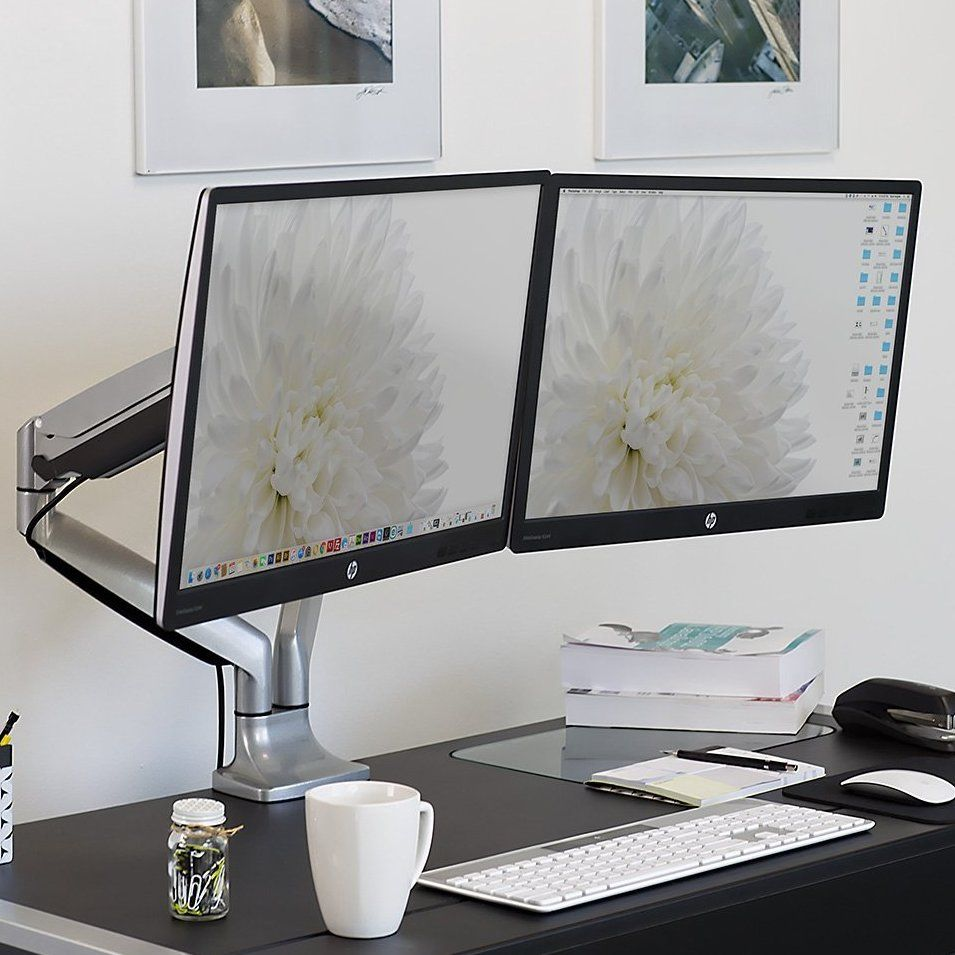3 schermen:
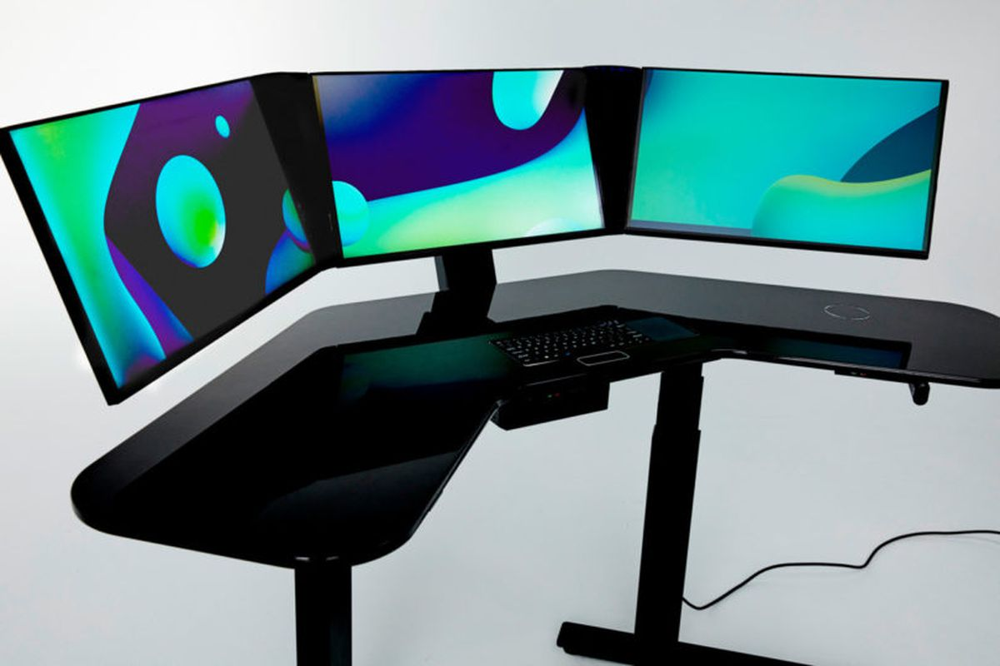Het voordeel van 1 groot scherm, is dat er sneller gewerkt kan worden via een clean desk principe. Er wordt dan nog maar gebruik gemaakt van slechts 1 scherm, 1 toetsenbord en 1 muis! Omwille van bepaalde redenen kan u er toch voor kiezen om met meerdere schermen te werken.
Er wordt momenteel bekeken of er omgeschakeld kan worden naar een persoonlijke videowall. Dit betekent dat je gewoon alle nuttige informatie kan ophalen op slechts 1 scherm! Momenteel werken we met verschillende pc's die herleidt worden naar 6 verschillende schermen. Via bepaalde hardware en software is het mogelijk om al deze pc’s nu naar slechts 1 scherm te herleiden. Operators kunnen dan zelf kiezen welke schermen ze willen openen op hun monitor. Geseb is momenteel een bedrijf dat deze software aanbiedt! Het grootste voordeel van deze persoonlijke videowall is dat u zelf kiest wat u te zien krijgt! U kan zelfs deze informatie plaatsen op het scherm zoals u zelf wil! Dit systeem gaat dit ook onthouden. Wanneer u de volgende keer aanmeldt, ziet u terug dezelfde lay-out zoals u ze de vorige keer hebt gemaakt! Deze lay-out is ook zeer makkelijk en efficiënt te maken door gewoon de noodzakelijke informatie te slepen naar het scherm en deze met de muis groter of kleiner te maken. Meer informatie op deze website. Dit is een voorbeeld van hoe een persoonlijke videowall eruit zou kunnen zien:
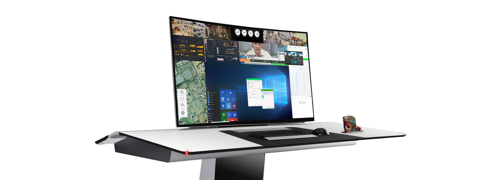Hieronder ook nog een YouTube video over Gesab VideoWall waardoor je een beter zicht kan krijgen over deze technologie:
Je kan de verschillende schermen verplaatsen, over elkaar plaatsen, van grootte veranderen,… Zo kan je bv. kiezen een webbrowser op je scherm te slepen, daarnaast surveillance camera's te plaatsen, hieronder een opzoeksysteem waar je bv. nummerplaten kunt opzoeken, enz. Dit zou er zo kunnen uitzien:
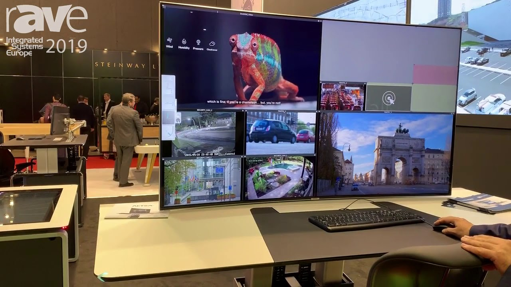Hier ook nog een kort demo filmpje van hoe je de schermen zou kunnen indelen:
Je kan ook heel snel bepaalde schermen naar voren brengen of meer naar de achtergrond brengen. Dit zou kunnen door gewoon op de bovenste balk te drukken van het scherm. Hieronder staat een korte demo ter beschikking van hoe dit net werkt:
Ten slotte kan je ook je schermen groter of kleiner maken door de randen vast te pakken en te slepen. De inhoud die op deze schermen staat, zullen in veel gevallen dan ook mee veranderen naargelang de grootte. Hieronder een korte demo:
Via de smart mouse kan je van het ene scherm naar het andere gaan met de muis zonder bv. nog te klikken in het scherm. Als je in dit scherm terecht komt, is je muis automatisch geactiveerd! Dit hoef je ook maar slechts eenmaal te activeren en dan blijft deze optie aangevinkt staan. Pas op, dit is geen type muis, maar een optie die aangepast kan worden binnen het programma! Het grote voordeel hiervan is dat er veel sneller en efficiënter kan gewerkt worden. Als je snel van het ene naar het andere scherm wil gaan, hoef je via smart mouse niet meer naar een ander toetsenbord te stappen of nog extra te klikken in dat scherm om de muis te activeren. Hieronder een video die een korte demo geeft van de smart mouse:
Er bestaat de mogelijkheid om op een snelle manier bepaalde zaken per scherm aan te passen. Bijvoorbeeld het maximaliseren of het sluiten van het scherm. Sommige schermen kunnen ook als bedoeling hebben om het geluid te verhogen of verlagen met een klik van de muis. Binnen de technologie van het bedrijf Gesab, noemt dit "Hot Corners". Hieronder 2 demo's van hoe dit er eventueel zou kunnen uitzien:
Dit is in eerste instantie misschien een gekke stelling/vraaag. Toch is dit niet zo'n gekke vraag. In sommige gevallen staat er zo'n grote hoeveelheid informatie op het scherm, dat je de bomen door het bos niet meer ziet. Ook kan je muis verstopt zijn op een witte achtergrond waardoor je deze niet meer ziet. Ook moet je als operator snel beslissingen kunnen maken en zaken opzoeken. Wanneer je dan de muis kwijt bent op het scherm, is dit niet ideaal. Er bestaat technologie om je muis terug op te sporen op je scherm. Door bv. tweemaal op de "Ctrl" toets te duwen, wordt deze terug weergegeven op het scherm. Hieronder een video om dit te verduidelijken:
Hiermee bedoelen we natuurlijk niet het fysiek verplaatsen van schermen en computers of dat er verschillende mensen achter 1 scherm zitten. Met het delen van een scherm wordt bedoeld dat iemand op een knop drukt en jij dan ook de inhoud van die persoon zijn/haar scherm kunt bekijken op je eigen scherm. Er wordt dus met andere woorden een kopie van de andere persoon zijn/haar scherm naar dat van jou gestuurd. Wanneer die andere persoon ergens een handeling uitvoert op die pc, kun jij dat ook live meevolgen. Dit kan bv. gedaan worden wanneer een andere persoon vastzit met een bepaald probleem. Zo kun je dus op een snelle manier meekijken zonder van je stoel te gaan. Ook administrators kunnen zo makkelijk meekijken als er problemen zijn. Deze zouden dan ook de controle van het scherm kunnen overnemen, zodat de andere persoon met zijn/haar muis en toetsenbord jou scherm bediend. Dit zou er zo kunnen uitzien:
Wanneer er toch iemand je scherm zou willen overnemen, krijg je daar ook telkens een melding of een pop-up van. Geen paniek dus dat er plots mensen komen spioneren op wat er allemaal op het scherm gebeurd. Je zal dus altijd die melding krijgen! Dat zou er zo kunnen uitzien:
Hiermee bedoelen we natuurlijk geen scenario van "big brother is watching you". Een geschiedenis functie zorgt er natuurlijk voor dat er gezien kan worden wie wat heeft opgezocht op het systeem. Het is namelijk niet de bedoeling dat een operator zo maar allerlei zaken gaat opzoeken die niet relevant zijn. Maar als voordeel zorgt het wel als geheugensteuntje voor wat je zelf in het verleden hebt opgezocht. Als je bv. net iets hebt opgezocht en dit vergeten bent (of je werd gestoord door iemand), kun je dit snel even opzoeken wat je had opgezocht. Dit zou er zo kunnen uitzien:
Dit is een open, optionele vraag waar u nog eventuele andere suggesties of wensen kunt vermelden.
Dit is een open, optionele vraag waar u nog verduidelijking/opmerkingen kwijt kan. Als u een verduidelijking/opmerking wenst te geven over een bepaalde vraag of meerdere vragen, vergeet dan zeker het nummer van de vraag ook niet te vermelden.
De grootte van een scherm wordt vaak gedefinieerd op basis van de diagonaal van het scherm. Dus bv. de lengte van de linkerbovenhoek tot aan de rechteronderhoek. Schermen krijgen ook steeds Engelse eenheden mee, vandaar de eenheid "Inch". Hieronder staan enkele afbeeldingen om de groottes visueel weer te geven:
24 inch (60.96 cm):
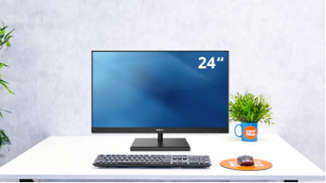27 inch (68.58 cm):
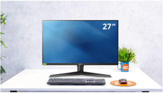32 inch (81.28 cm):
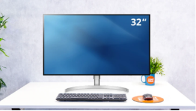34 inch (86.36 cm):
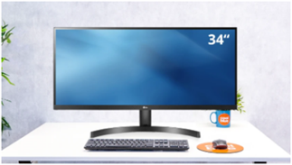49 inch (124.46 cm):
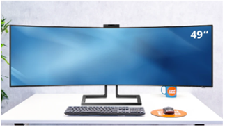Dit is een vraag die betrekking heeft tot de schermresolutie. Een scherm is opgebouwd uit pixels. Dit zijn allemaal kleine punten op het scherm die allemaal een andere kleur hebben en zo het beeld gaan vormen op je scherm. Hoe lager de resolutie is, hoe minder van deze punten er zijn. Dit zorgt ervoor dat een bepaalde afbeelding gevormd moet gaan worden met veel minder punten, waardoor deze minder scherp zal zijn. Deze schermresolutie wordt altijd weergegeven in het aantal pixels in de breedte en in de hoogte. Een standaard monitor zal 1920*1080 pixels hebben. Dit wordt ook wel "Full HD" genoemd. Een 4K beeldscherm zal 3840*2160 pixels hebben. Pas op: je kan natuurlijk wel een mooi beeldscherm hebben, maar als bv. de camerabeelden niet 4k zijn, zul je weinig nut hebben aan een 4k beeldscherm. In onderstaande afbeelding kun je de verschillen zien tussen full hd en 4k:
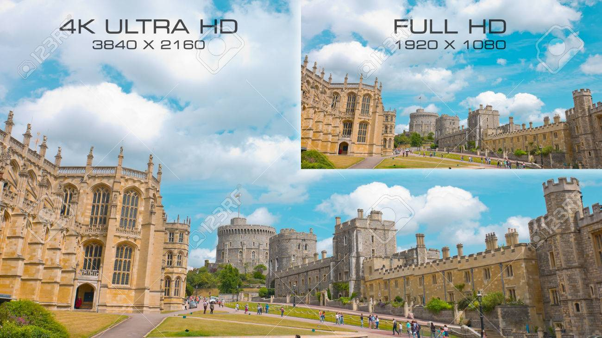 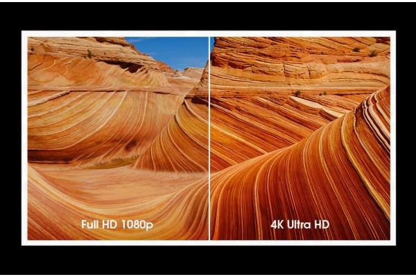Deze vraag heeft betrekking tot de beeldverhouding! In het Engels noemen ze dit ook wel eens "aspect ratio". Dit gaat de verhouding weergeven tussen de breedte en de lengte van een beeldscherm. Een normaal scherm gaat vaak een verhouding hebben van 16 inch (40,64 cm) in de lengte en 9 inch (22.86 cm) in de hoogte. Een ultrawide scherm zal vooral breder zijn. Deze heeft een lengte van 21 inch (53.34 cm) en 9 inch (22.86 cm). Een super ultrawide scherm zal het breedste zijn! Deze heeft een lengte van 32 inch (81.28 cm) en een hoogte van 9 inch (22.86 cm). Hieronder een visuele weergave van de 3 verschillende verhoudingen:
Normaal scherm (16:9):
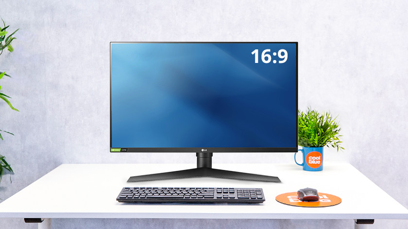Ultrawide scherm (21:9):
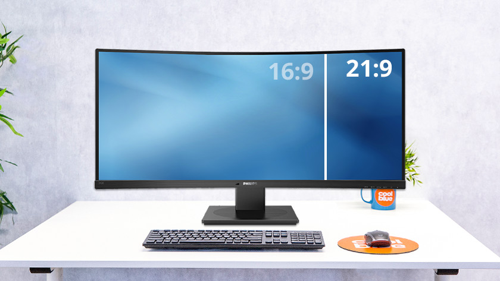Super Ultrawide scherm (32:9):
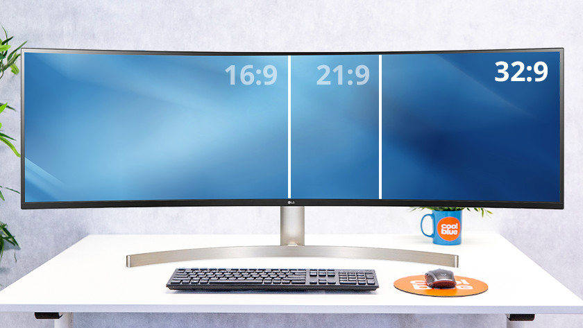Deze vraag heeft betrekking tot de verversingssnelheid. Wanneer je naar je scherm kijkt, dan zie je eigenlijk heel veel bewegende beelden na elkaar. Hoe sneller deze beelden geladen worden na elkaar, hoe vloeiender je de dingen op je scherm ziet. Deze snelheid wordt aangegeven in Hertz. Hoe groter de Hertz is, hoe vloeiender het beeld dus. Als je bv. een ververssnelheid hebt van 60 Hertz, dan zal het beeld 60 keer per seconde ververst worden. Bij een snelheid van 144 Hertz, zal het beeld dan 144 keer per seconden ververst worden. Wanneer dit te laag is, zal het beeld haperig overkomen. Er wordt ook vaak gediscussieerd over het feit dat je vanaf 60 Hertz geen verschil meer kunt waarnemen. Of dit klopt of niet laat ik hier in het midden. Dit is een begrip dat vooral in de gaming wereld van belang is, maar ik wou het toch ook even bevragen! Hieronder een kleine video om dit wat te verduidelijken. Deze gaat over een gsm, maar valt perfect door te trekken naar een gewoon beeldscherm:
Deze vraag heeft betrekking tot de pixel dichtheid of PPI (pixels per inch). Een scherm is opgebouwd uit pixels. Dit zijn allemaal kleine punten op het scherm die allemaal een andere kleur hebben en zo het beeld gaan vormen op je scherm. Hoe lager de resolutie is, hoe minder van deze punten er zijn. Dit zorgt ervoor dat een bepaalde afbeelding gevormd moet gaan worden met veel minder punten, waardoor deze minder scherp zal zijn. Deze pixel dichtheid geeft dan aan hoeveel pixels er per inch weergegeven zullen worden. Hoe hoger dit cijfer is, hoe scherper het beeld zal zijn! Bv. van 0-95 zal een wazig scherm geven, terwijl een pixel dichtheid van 140+ kristalhelder zal zijn! Deze worden beschreven als het neusje van de zalm. In de foto hieronder zie je ook dat de bloem telkens beter en beter wordt weergegeven dankzij deze pixeldichtheid:
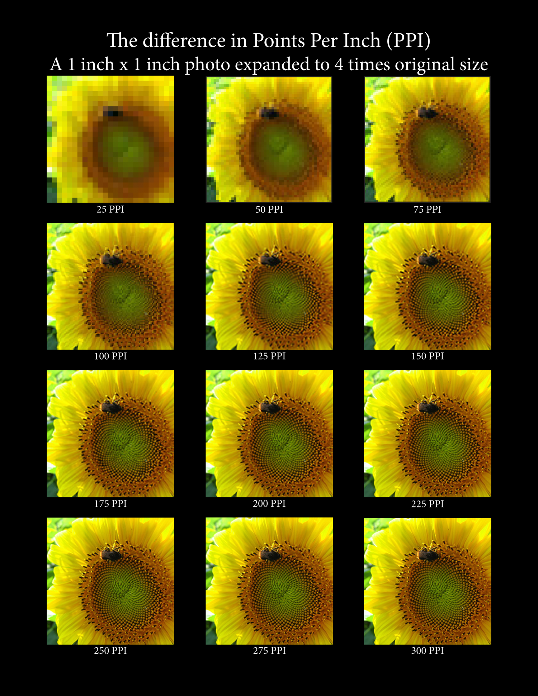Wanneer we spreken met een scherm die een touchscreen functionaliteit heeft, bedoelen we hiermee dat je de computer kunt besturen door het scherm aan te raken. Normaal gezien gebruik je een muis en toetsenbord om op dingen te klikken en te typen. Bij een touchscreen heb je hierbovenop ook de mogelijkheid om al deze handelingen te doen met je vinger door op het scherm te drukken. Pas op: een touchscreen zal geen muis en toetsenbord vervangen! Je hebt nu de mogelijkheid om zowel touchscreen als muis en toetsenbord te gebruiken! Een nadeel hiervan is wel dat een touchscreen vaak niet zo heel erg nauwkeurig is! Hieronder een voorbeeld van dergelijk touchscreen:
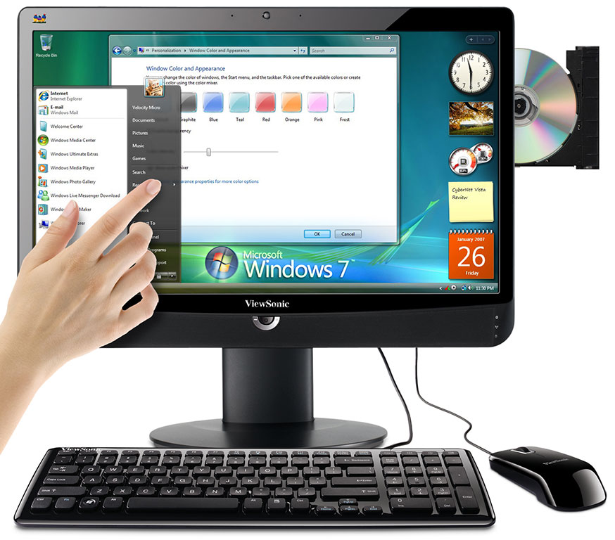Ken je het gevoel dat je soms op je pc zit te werken of je zit buiten wat te scrollen op je gsm en plots schijnt de zon van achter je schouders op je scherm? Vaak resulteert dit dan dat je niet veel meer kunt zien op je scherm, of je zal erg veel moeite moeten doen hiervoor en de juiste hoek zoeken zodat je toch soms alles nog kunt lezen. Een oplossing hiervoor kan een antireflecterende laag zijn op je scherm. In de technische wereld wordt dit ook wel eens een anti glare genoemd! Deze extra laag op je beeldscherm gaat ervoor zorgen dat reflecties van buitenaf vermeden gaan worden. Ook als de zon dan op je scherm schijnt, ga je nog veel meer op je scherm kunnen aflezen dan met een gewoon scherm! Het nadeel van dit soort scherm is dat de kleuren toch minder tot hun recht gaan komen op dit soort van scherm. Hieronder een voorbeeld:
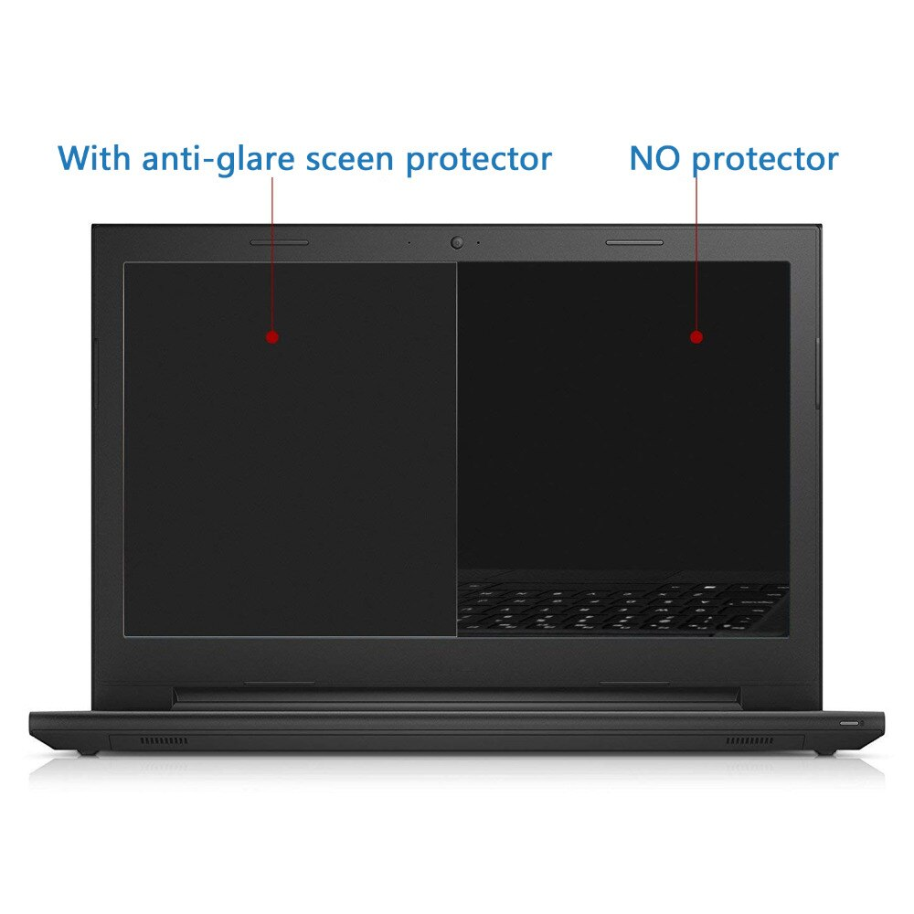In deze foto kun je het verschil zien tussen beide soort schermen. Links heb je de antireflectie laag en rechts heb je het gewone, glanzende scherm. De linkerkant ziet er veel doffer uit dan de rechterkant. Dit komt door de laag die hierop is geplakt. De rechterkant voelt daarom helderder aan. Toch zie je ook de reflectie van het toetsenbord in het rechtergedeelte. Dit is om aan te duiden dat je in dit type scherm veel meer belemmeringen kunt zien dan in het antireflectie scherm. Aan de rechterkant zie je dus ook geen reflectie. Beide hebben dus hun voor- en nadelen. Daarom moet je een goede afweging maken.
De laatste jaren wordt je vaak rond de oren geslagen met termen zoals "gebogen scherm" en "curved screens". Dit is de afgelopen jaren dan ook een grote hype geweest in de wereld van de beeldschermen. Vroeger had iedereen een gewoon, plat scherm voor zich staan. Nu zie je steeds vaker en vaker beeldschermen die gebogen zijn. Toch is het nog steeds een belangrijke keuze om te overwegen tussen een plat of gebogen scherm. Beide hebben hun plus- en minpunten. Het belangrijkste pluspunt aan een gebogen scherm, is het feit dat wanneer je telkens naar ander punt kijkt, deze punten altijd even ver weg staan van je ogen. Hierdoor zullen je ogen meer rust hebben tijdens het werken (wat tijdens langdurige shifts veel aangenamer is voor het oog om naar te kijken). Ook zal je minder snel met je ogen en hoofd moeten bewegen als je bv. naar de uitersten van het scherm kijkt. Ergonomisch is dit dus meer verantwoord. Het voordeel van platte schermen is dat je hier meerdere van naast elkaar kunt zetten (wat niet bepaald mogelijk is bij gebogen schermen). Hieronder zie je het verschil tussen een plat en gebogen scherm.
Plat scherm:
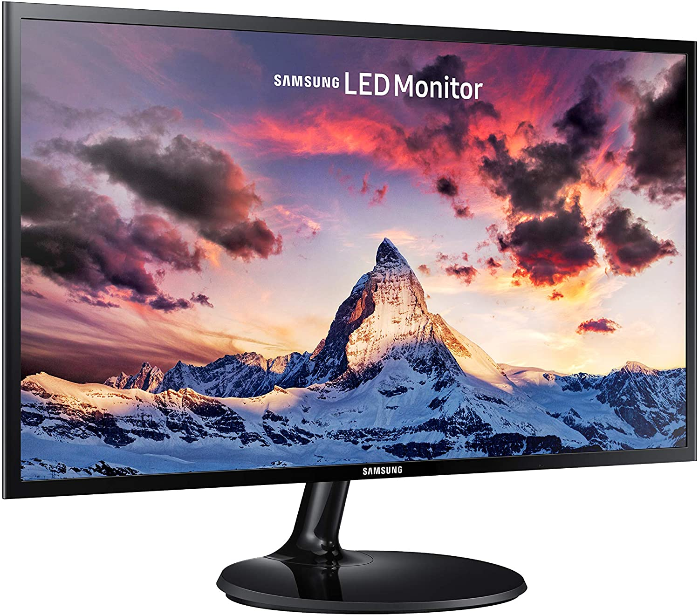Gebogen scherm:
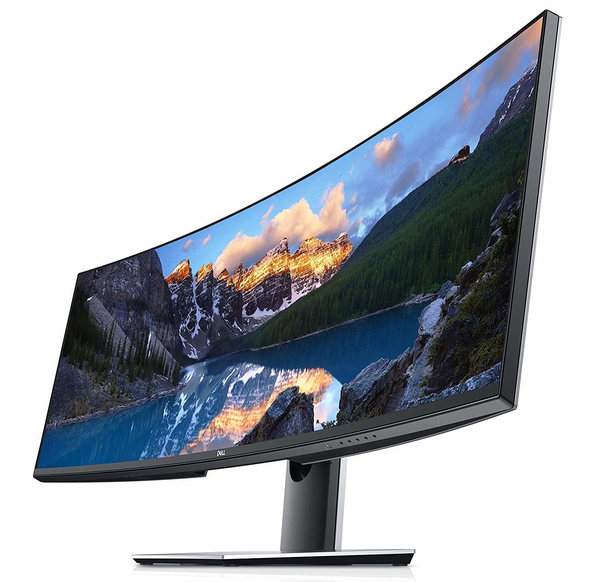Vele mensen, mezelf inclusief, krijgen lichamelijk klachten als ze te lang naar het scherm staren. Maar hoe komt dat nu? Uit je scherm komen vele kleuren die natuurlijk zo het beeld naar je ogen brengen. Een van deze kleuren is het blauwe licht! Dit is best schadelijk voor de ogen. Door dit licht komen dan ook redelijk veel klachten zoals oogpijn, vermoeidheid, hoofdpijn,... Deze zorgen op hun beurt dan weer dat de alertheid kan afzwakken. Zeker wanneer je als operator shiften hebt van 12 uur is dat niet ideaal. Een oplossing hiervoor is een blauwe licht filter. Zoals de naam al doet vermoeden, filtert dit het blauwe licht weg uit het scherm. Dit is veel aangenamer voor je ogen om naar te kijken. Heel het scherm krijgt dan een soort van oranjekleurige gloed in plaats van het felle, gewone licht. Pas op: deze keuze is niet bindend! Je kan kiezen om deze optie aan of uit te zetten. Hierdoor kan je bv. enkele uren naar een gewoon scherm kijken en daarna enkele uren naar een scherm kijken met de filter geactiveerd! Hieronder een voorbeeld.
Gewoon scherm met blauw licht:

Scherm met een blauwe licht filter:
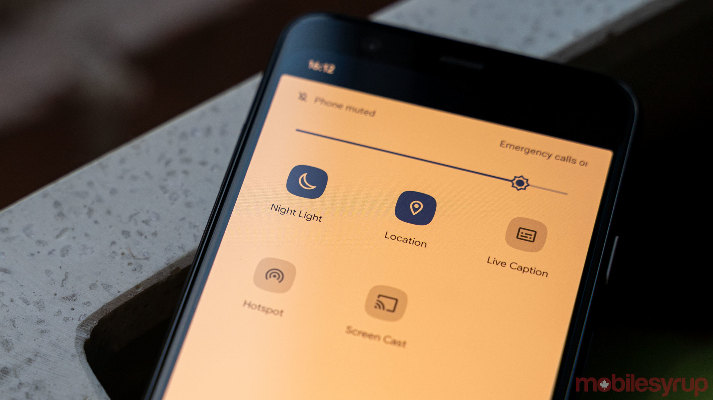Ten slotte is er ook een technologie genaamd "trillingsvrije technologie". Dit kan ervoor gaan zorgen dat kleine trillingen in het scherm beperkt zullen worden waardoor je minder snel klachten zult gaan krijgen. Er kan dus geopteerd worden voor een combinatie van beide technologieën!
Als je op zoek gaat naar een beeldscherm, is het belangrijk dat je een keuze kunt maken in de verschillende kleuren die een beeldscherm te bieden hebben. Zo heb je bijvoorbeeld de kleurruimte. Een kleurruimte is een groepje met verschillende kleuren. Elk groepje bevat evenveel kleuren, maar welke tinten dit zijn verschilt per groep. sRGB wordt voornamelijk gebruikt voor algemeen gebruik van de pc. Grafische designers en fotobewerkers gebruiken best Adobe RGB en videobewerkers gaan ten slotte best voor DCI-P3. Hieronder een voorbeeld van de verschillende kleurruimtes:
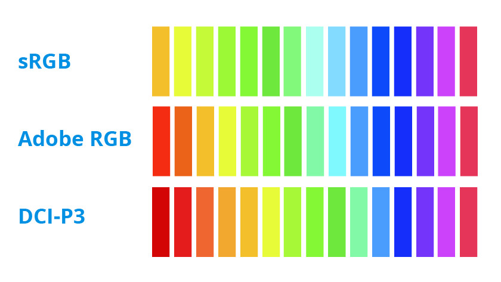Ook kleurdiepte is hier een interessant begrip! Dit zorgt ervoor dat er een grotere verscheidenheid is aan kleuren. Zo wordt het scherm veel levendiger. Er wordt een verschil gemaakt in 3 dieptes. De eerste is 8-bit. Dit betekent dat er 16.7 miljoen verschillende kleuren op het beeld getoverd kunnen worden. 10-bit zorgt ervoor dat er iets meer dan 1 miljard kleuren op het scherm getoverd kunnen worden. Ten slotte zorgt 12 bit dat er meer dan 68 miljard kleuren op het beeld kunnen komen. In veel gevallen is een 8 of 10-bit kleurendiepte meer dan voldoende. 12-bit is vaak overkill! Een klein voorbeeld van deze kleurendiepte:
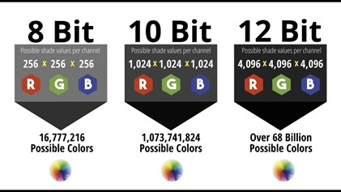Dit kan ook voorgesteld worden aan de hand van potloden. Een kleinere kleurendiepte betekent dat je een beperkte set hebt aan kleurpotloden. Je hebt bv. 3 soorten groen, 3 soorten rood en 3 soorten geel. Als je een grotere kleurendiepte hebt, zou dit kunnen betekenen dat je meer potloden hebt. Nu heb je misschien 6 verschillende soorten rood, geel of blauw!
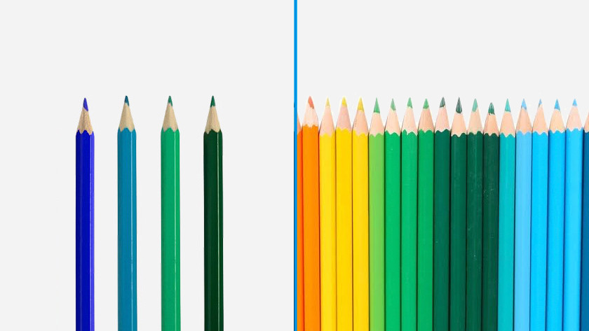Dit is een open, optionele vraag waar u nog eventuele andere suggesties of wensen kunt vermelden.
Dit is een open, optionele vraag waar u nog verduidelijking/opmerkingen kwijt kan. Als u een verduidelijking/opmerking wenst te geven over een bepaalde vraag of meerdere vragen, vergeet dan zeker het nummer van de vraag ook niet te vermelden.
Tijd om even een bommetje te laten vallen. Wist je al dat een toetsenbord vuiler is dan een wc-bril? Om het nog veel erger te maken heeft een toetsenbord 400 keer meer bacteriën dan een wc-bril. Dit is wat de universiteit van Arizona heeft onderzocht! Dit is dus allesbehalve proper. Veel van die bacteriën komen ook gewoon van je handen. Nu wordt er momenteel toch veel ontsmet. Toch is dit in deze onzekere tijden omtrent Corona niet fijn om te horen. Het is dus perfect mogelijk dat je dit vies vindt om te gebruiken.
Het BYOD principe is de laatste jaren veel gebruikt! In hogescholen is dit een al veel gebruikt principe waarbij studenten hun eigen laptop en spullen meenemen naar de les. Zo gebruikt iedereen zijn eigen spullen. Qua hygiëne is dit een hele stap voorwaarts aangezien je enkel je eigen muis, toetsenbord en hoofdtelefoon gebruikt. Vandaar de vraag of jij hier interesse in hebt! Natuurlijk zijn we geen onmensen en moet je zelf dit materiaal niet aankopen een meenemen! Het is dan de bedoeling dat dit materiaal ter plekke beschikbaar is. Wanneer je dan aankomt op je shift kan je bv. je materiaal uit de kast nemen en aansluiten op de computer. Enkel jij raakt dan dit materiaal aan. Iedereen zou dan ook hetzelfde materiaal krijgen! Ook geen paniek als je niet direct weet hoe je dit materiaal aansluit. Er staan altijd mensen klaar om te helpen!
Een wattes toetsenbord? Ik kan goed begrijpen dat je momenteel toch eens goed door je haar moet krabben bij het horen van die nonsens. Toch zijn dit bekende termen binnen de IT wereld. Het gaat hier over de indeling van je toetsenbord. Als je linksboven kijkt naar de eerste 6 letters zie je of A Z E R T Y of Q W E R T Y. De kans is groot dat je azerty ziet. Dit is namelijk de indeling die gemaakt wordt op Belgische of Franse toetsenborden. Als je een Amerikaans toetsenbord hebt, gebruik je qwerty. Deze vraag is vooral gericht naar gemak. De layout van het toetsenbord zal bij beide versies dan ook wat verschillen.
Mijn azerty toetsenbord:
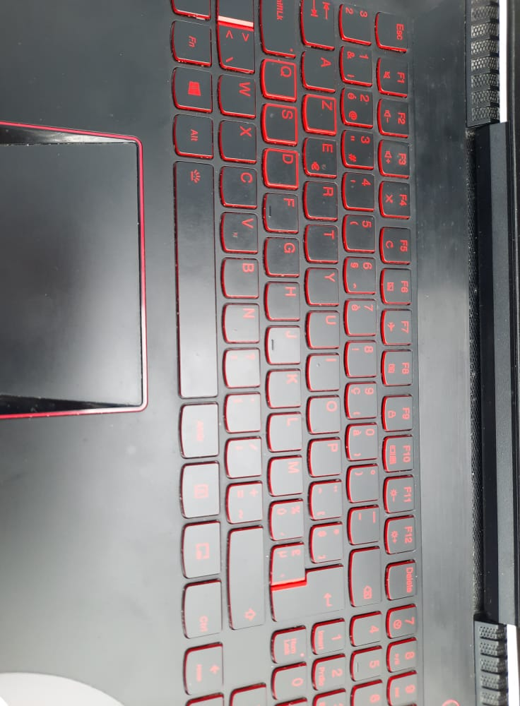Een qwerty toetsenbord:
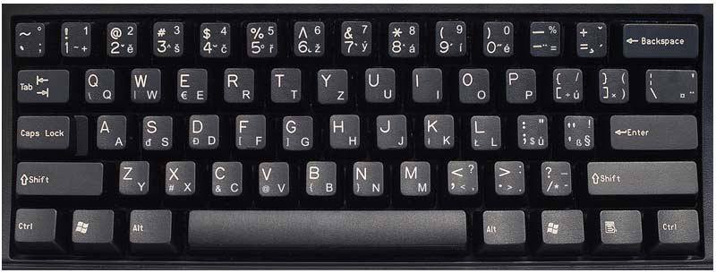Toetsenborden komen in alle vormen en maten. Zo heb je toetsenborden waarbij de toetsen hard uit het toetsenbord komen en toetsenborden waarbij de toetsen redelijk vlak en plat zijn. Platte toetsen betekenen dus dat de toetsen voornamelijk laag zullen liggen en niet uit het toetsenbord komen. Je handen komen lager te liggen en kans op RSI wordt hierdoor verlaagd. Dit is een aandoening waarbij je spierpijn en dergelijke krijgt van repetitieve taken uit te voeren. Ook zullen de toetsen veel minder lawaai maken als je ze aanslaat! Dit is ook positief voor een stille omgeving dus!
Platte toetsen:
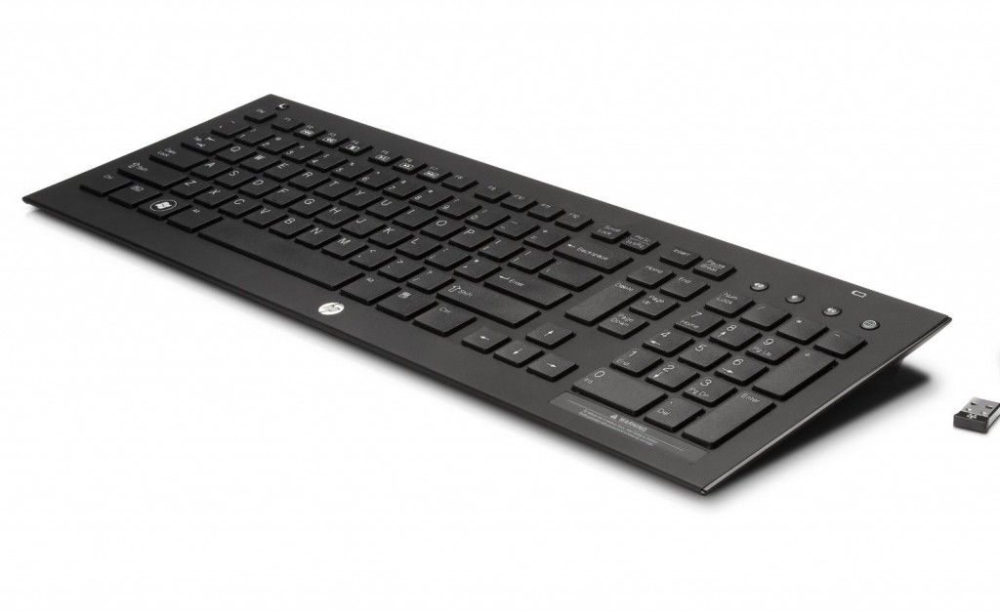Hoge toetsen:
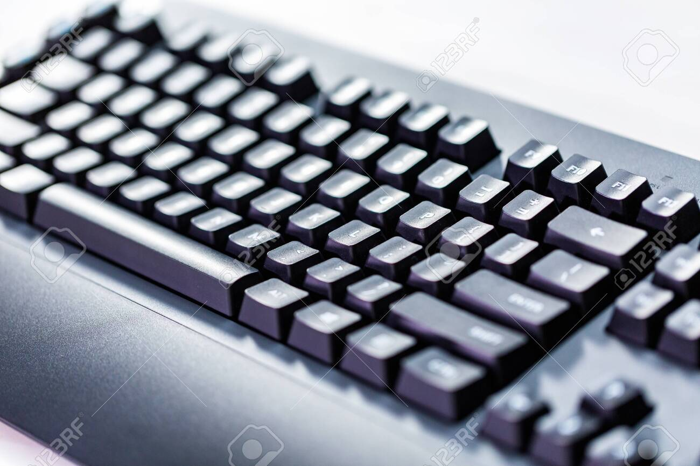Een morsbestendig toetsenbord kan bv. tegen een omgestoten glas water. Stel je voor dat je per ongeluk je glas of flesje water omstoot, zal je toetsenbord niet vernield zijn. Het is natuurlijk niet de bedoeling om je toetsenbord mee te nemen als je gaat zwemmen, want dit zal het niet overleven. Er kan ook gekeken worden naar een bekerhouder voor op de bureau zelf!
We hebben al gezien dat er veel verschillen zijn in de wereld der toetsenborden. Deze vraag heeft dan ook betrekking tot het soort toetsen. Je hebt 2 soorten hier: een membraan toetsenbord of een mechanisch toetsenbord. Een membraan toetsenbord is wellicht het toetsenbord dat u zelf gebruikt! Dit heeft de gewone toetsen en doet eigenlijk helemaal niets speciaal. Het wordt pas speciaal wanneer we kijken naar het mechanische toetsenbord! Typerend aan dit toetsenbord is het harde, klakkende geluid dat een toets maakt wanneer het ingedrukt wordt! Wel... Waarom zou je in hemelsnaam dan kiezen voor dit mechanische toetsenbord? Goede vraag! Bij een mechanisch toetsenbord hoef je de toets niet volledig in te drukken voor deze geregistreerd wordt! Dit heeft met andere woorden een lichtere toetsaanslag dan een membraan toetsenbord. Ergonomisch is dit dus een groot voordeel aangezien dit ook lichamelijke klachten zou kunnen voorkomen. Toch is dit verschil ook niet zo bijster groot! Een mechanisch toetsenbord zal ook bij elke toetsaanslag een klakkend geluid maken. Hieronder een voorbeeld. Vergeet zeker niet te luisteren met geluid op!
Ik moet natuurlijk niet vertellen dat het werk van een dispatcher ooit stopt. We weten allemaal goed dat ook tijdens de nacht mensen paraat staan! Hierdoor is het interessant om te kijken naar de optie voor een verlicht toetsenbord. Velen beschikken niet over de mogelijkheid om blind te kunnen typen! En zelfs dan is dit nog niet ideaal om in de donkere of in het schemerlicht de toetsen te zoeken. Een oplossing hiervoor is het verlicht toetsenbord! Met een klik op een knop (of een toetsencombinatie) zou u op dit soort toetsenbord het licht kunnen aandoen. Ook hier zijn weer verschillende opties die gaan van alle kleuren tot de regenboog tot een enkele kleur voor het hele toetsenbord.
Voorbeeld van een toetsenbord dat een andere kleur per toets kan hebben:
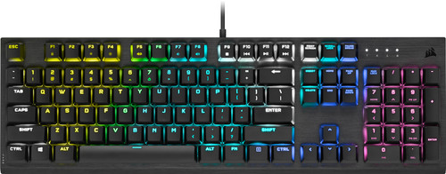Een video van mijn toetsenbord dat slechts 1 kleur heeft:
Dit is een open, optionele vraag waar u nog eventuele andere suggesties of wensen kunt vermelden.
Dit is een open, optionele vraag waar u nog verduidelijking/opmerkingen kwijt kan. Als u een verduidelijking/opmerking wenst te geven over een bepaalde vraag of meerdere vragen, vergeet dan zeker het nummer van de vraag ook niet te vermelden.
De muis van de computer is eigenlijk een verlengde van je arm. De laatste jaren worden deze ook echt gemaakt naar de hand van de persoon. Hierdoor worden er zowel muizen gemaakt voor rechtshandigen als voor linkshandigen. Een persoon die linkshandig is, zal niet een muis kunnen gebruiken die voor rechtshandigen gemaakt is! Er kunnen bv. knopjes staan aan de zijkant van de muis waardoor je deze enkel kunt indrukken met je duim. Bij rechtshandigen staan deze links op de muis, waardoor linkshandigen hun duim aan de foute kant zit. We kunnen Middeleeuwse praktijken gaan gebruiken en de duim afkappen, maar dat is niet bepaald een ethische oplossing. Daarom zijn er ook universele muizen die zowel door beide handen gebruikt kunnen worden. Hier zijn dan de opties vaak eerder beperkt.
Rechtshandige muis:
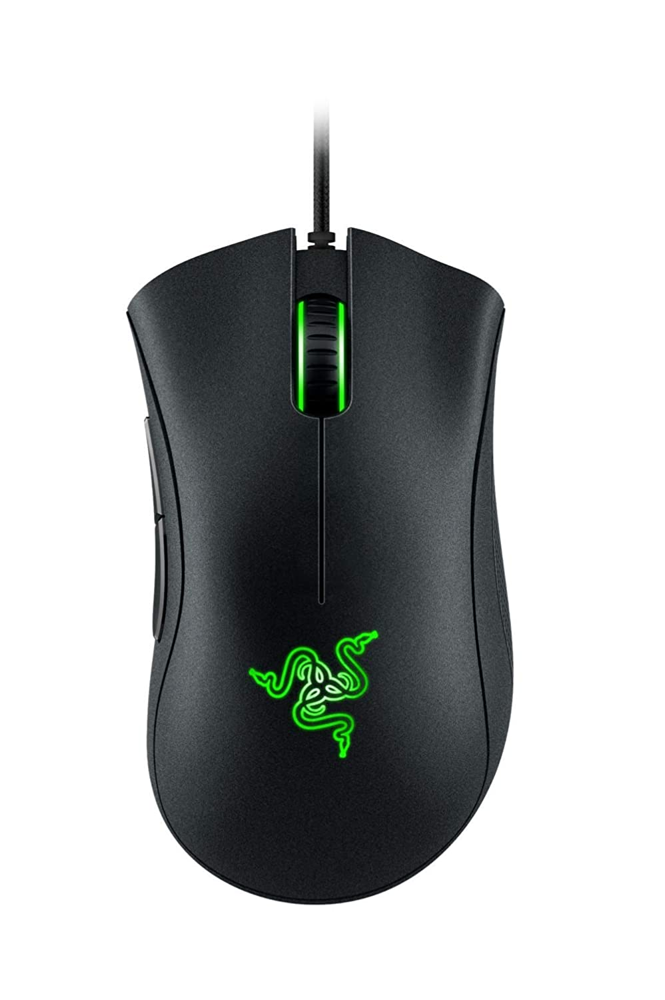Linkshandige muis:
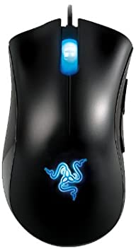Muis voor beide handen:
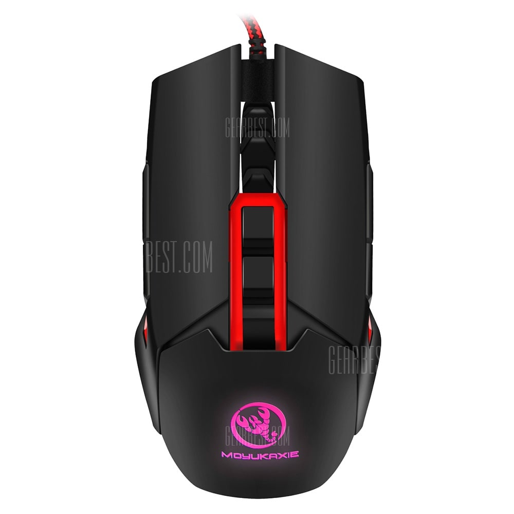Vele mensen verkiezen een muismat onder hun muis. De reden waarom is dat hun muis hierdoor veel nauwkeuriger zal gaan werken daardoor! Zonder muismat kan de muis soms haperiger overkomen op het scherm. Muismatten heb je ook in alle vormen en maten. Je hebt een muismat waar enkel je muis opkan, maar je hebt ook muismatten waar je ook je toetsenbord bij kunt opplaatsen. Dit zorgt ervoor dat je toetsenbord vast staat op je bureau en niet kan verschuiven wanneer je polsen tegen het toetsenbord leunen. Hieronder enkele voorbeelden van muismatten met ook een foto van mijn eigen muismat:

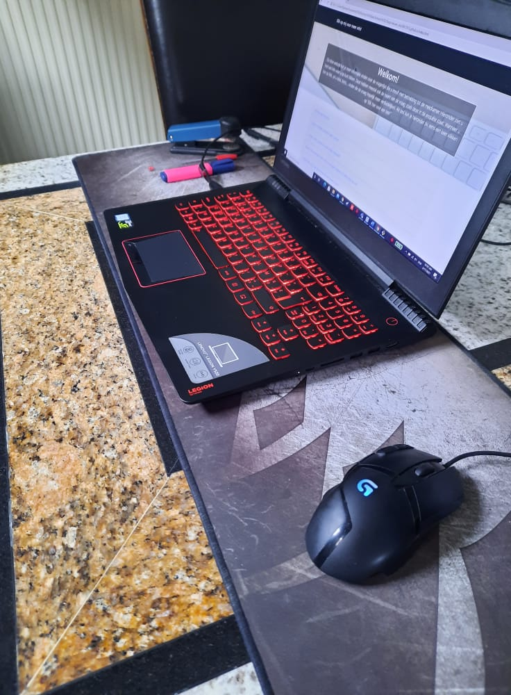
Heel wat jaren geleden was een muis relatief simpel. Je had een linkermuisknop, een rechtermuisknop en een wieltje in het midden om te scrollen. De laatste jaren krijg je van die hypermoderne muizen die rechtstreeks uit een science fiction film kunnen komen. Overal lijken nu knoppen te staan op de muis alsof ze als paddenstoelen uit de grond zijn geschoten. Het kan zelfs zo zijn dat je een muis zelf kunt gaan vertellen wat een bepaalde knop moet gaan doen! Zo kun je bv. zeggen dat een bepaalde knop aan de zijkant dient om terug naar een vorig tabblad te springen. Dit is een voorbeeld van zo'n programmeerbare muis. Aan de zijkant zie je een vijftal knoppen die je zelf naar harten lust kunt indelen!
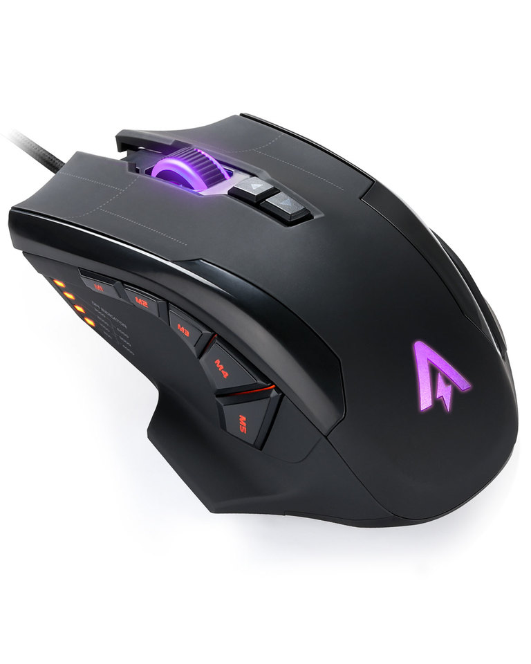Zoals je bij de vorige vraag al kon lezen zijn muizen de laatste jaren zeer technologisch geavanceerd geworden. Een van deze zotte, nieuwe toevoegingen is de optie om de snelheid van de muis te veranderen. Aan de zijkant van de muis staan 3 knopjes waarmee je op een snelle en makkelijke manier de snelheid van de muis kunt veranderen. Je hebt een knop om de snelheid te verhogen, te verlagen en een resetknop waarmee deze terug naar de standaard snelheid gaat. In onderstaand voorbeeld zie je mijn eigen muis waarbij je de snelheid kunt aanpassen:
Deze vraag sluit aan bij vraag 29 omtrent het verlichte toetsenbord. Ook muizen hebben de optie om een lichtbron te gebruiken. Dit zal niet zo licht zijn als bij een toetsenbord. Dit kan weer allerlei soorten en vormen aannemen. Dit gaat van lichten aan de zijkant tot een enkel lichtje bovenop de muis. Sommigen geven alle kleuren van de regenboog en anderen geven dan weer slechts 1 kleur weer. Dit heeft vooral een mooi, estethisch effect. Hieronder 3 voorbeelden van hoe dit eruit ziet:
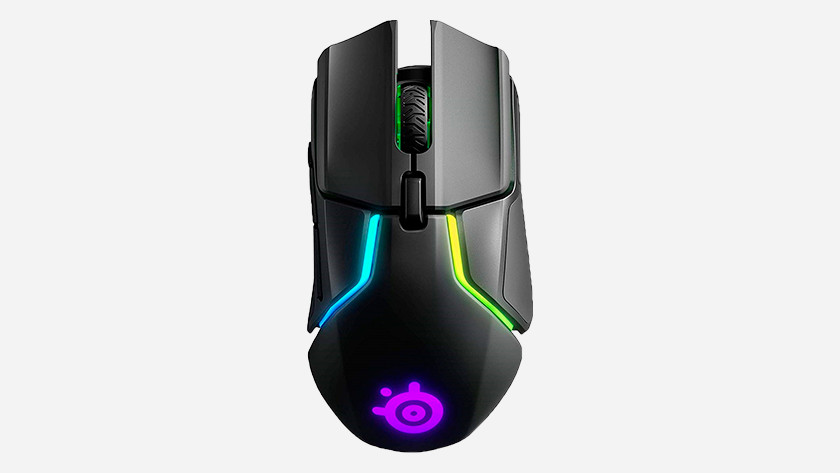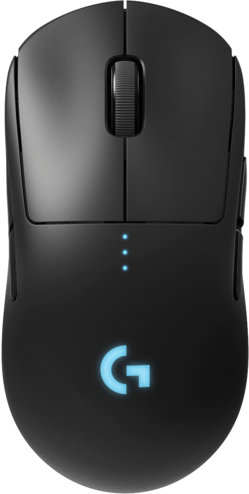
Ken je dat gevoel? Je bent rustig aan het werk, maar in de verte hoor je dat irritante geluid. Sommigen vinden het nog irritanter dan het geluid van een mug in de nacht. Juist! Iemand zit te klikken op de muis alsof zijn leven ervan af hangt. Speciaal hiervoor zijn stille muizen ontworpen. Wanneer je op de knopjes duwt, zul je dus geen klikkend geluid meer horen! Hier een video om dit aan te tonen:
Muizen komen in alle soorten en vormen voor. Tegenwoordig heb je 3 grote verschillen qua uiterlijk. Elk hebben ze dan weer hun eigen karaktertrekken!
Standaard muis:
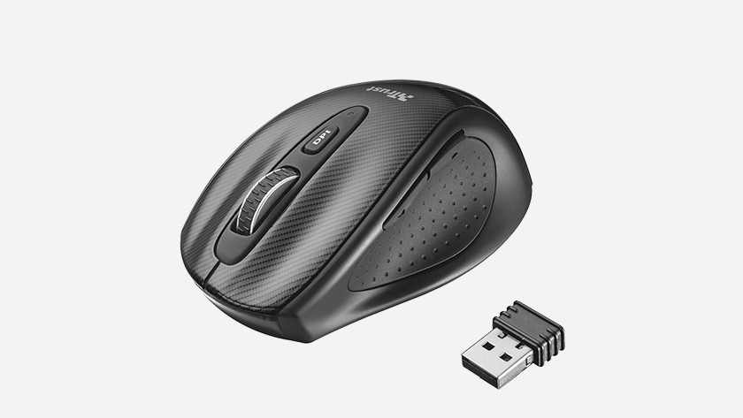Dit is de standaard en klassieke muis die iedereen wel kent. Deze heeft de linker- en rechtermuisknop, een scrollwieltje en kan eventueel ook nog extra knoppen aan de zijkant bevatten.
Verticale muis:
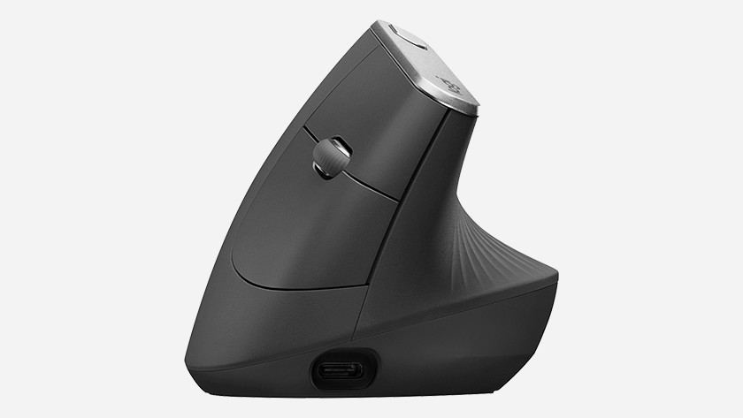Op het eerste zicht lijkt dit op een wezen waar Ellen Ripley tegen vecht in de film "Alien". Toch is dit een gewone computermuis die voornamelijk gericht is op ergonomisch gebruik. De knoppen die normaal gezien bovenaan de muis staan, bevinden zich nu aan de zijkant. Op deze manier hou je de muis volledig anders vast! Toch is dit een type muis dat bij velen onbekend is! Vandaar onderstaande video:
Touchpad
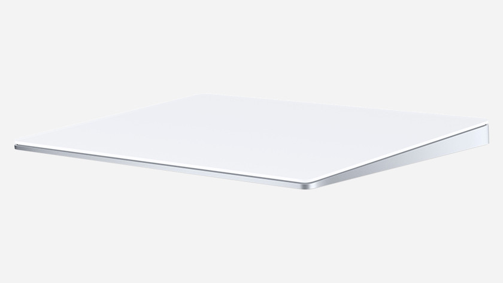Ook dit is weer een bizarre muis. Touchpad muizen bedien je door middel van aanrakingen. Deze muizen hebben dan ook geen knoppen en hoef je niet fysiek te verplaatsen zoals je met een ander type muis wel moet doen. Toch kan dit na verloop van tijd vervelend gaan voelen. Het is alsof je de muis zou gebruiken van een laptop!
Dit is een open, optionele vraag waar u nog eventuele andere suggesties of wensen kunt vermelden.
Dit is een open, optionele vraag waar u nog verduidelijking/opmerkingen kwijt kan. Als u een verduidelijking/opmerking wenst te geven over een bepaalde vraag of meerdere vragen, vergeet dan zeker het nummer van de vraag ook niet te vermelden.
Sommige hoofdtelefoons hebben knopjes op de bedrading of aan de zijkant om een gesprek mee op te nemen of op te hangen. Zo werk je snel en makkelijk.
Heb je dit ooit al eens meegemaakt? Je belt bv. naar iemand die je goed kent en op de achtergrond hoor je allerlei zaken zoals een kind dat het huis afbreekt of allerlei potten en pannen die ergens af vallen. Als je vriend/vriendin ruisonderdrukking had opstaan, zou je hier veel minder last van gehad hebben! Het geluid komt dan veel helderder binnen. Ook zou je die lastige kleuter niet of niet zo hard meer horen. Mensen aan de andere kant van de lijn horen je dus veel beter!
Hoofdtelefoons hebben vaak een ingebouwde microfoon. Deze bevindt zich dan aan de zijkant van een van de oorschelpen. Deze microfoon kan of vaststaan of je kan deze in- en uitklappen. In het eerste geval zal je dus altijd een microfoon naar voor hebben staan. In het 2e geval (wanneer je dus een inklapbare hebt), kun je deze even inklappen wanneer je niet aan het praten bent. Zo kun je bv. een slokje drinken nemen zonder dat er een microfoon lastig doet langs je mond!
Als je een hoofdtelefoon wil aanschaffen, kun je tussen verschillende oorkussens kiezen. Dit is het onderdeel van de hoofdtelefoon dat op je oren rust! Hier heb je dus verschillende mogelijkheden die elk hun voor- en nadelen hebben!
Op het oor:
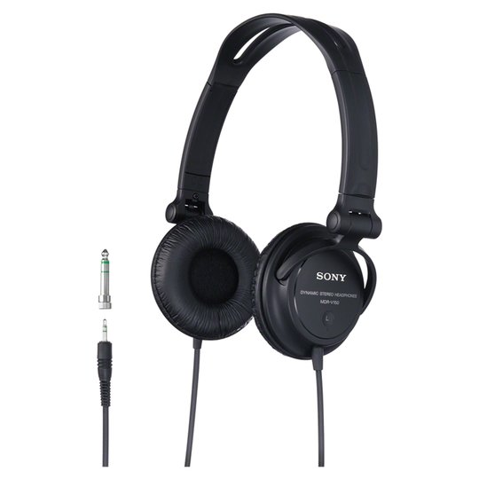Dit soort van hoofdtelefoon zet je gewoon op het hoofd, maar de oorkussens zullen zich niet volledig over het oor sluiten. Hierdoor zal deze vooral op het oor rusten! Dit soort van hooftelefoon zal compacter zijn dan het "op het oor" model! Een nadeel is dat dit de minst comfortabele hoofdtelefoon zal zijn!
Over het oor:
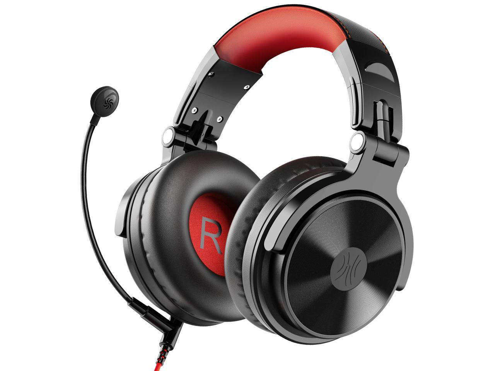Dit soort van hoofdtelefoon zet je ook gewoon op het hoofd, maar de oorkussens zullen zich volledig over het oor gaan plaatsen. Hierdoor zit je oor volledig in het oorkussen. Het voordeel is dat deze meer comfortabel zit en dat je meer afgescheiden zit van achtergrondlawaai. Een nadeel is wel dat deze soms iets zwaarder kunnen zijn dan de andere types van hoofdtelefoon!
In het oor:
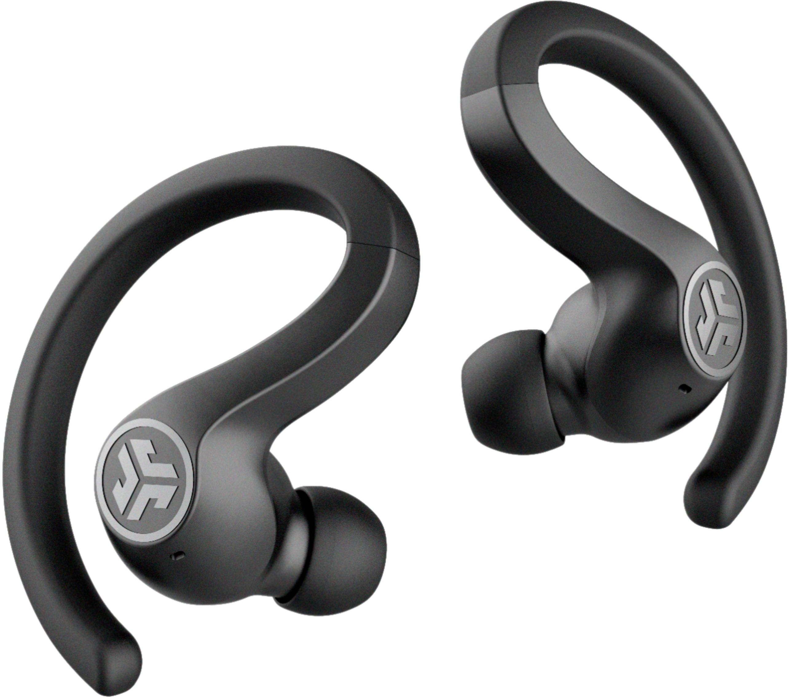Dit soort van hoofdtelefoon zet je niet meer op het hoofd, maar plaats je in de oren! In de volksmond worden die dan ook "de oortjes" genoemd! Het voordeel hiervan is dat je bijna niet meer van de buitenwereld zult horen. De nadelen zijn dat de microfoon hiervan in povere conditie is en dat deze op langere termijn gehoorschade kan geven!
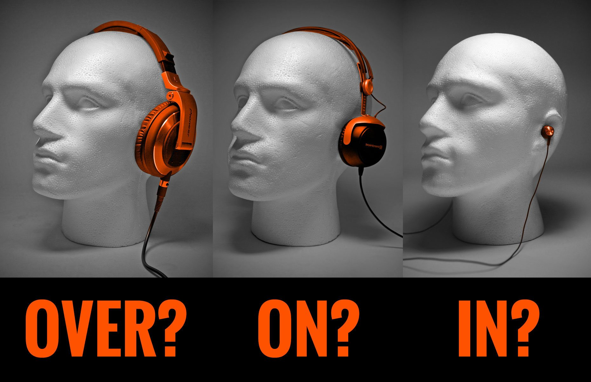
Een hoofdtelefoon kun je op heel wat verschillende manieren gaan dragen! Hierbij is het voornamelijk belangrijk om te gaan kijken naar wat comfortabel lijkt te zijn voor lange duur! Er zijn dus 4 grote opties beschikbaar!
Achter het hoofd:
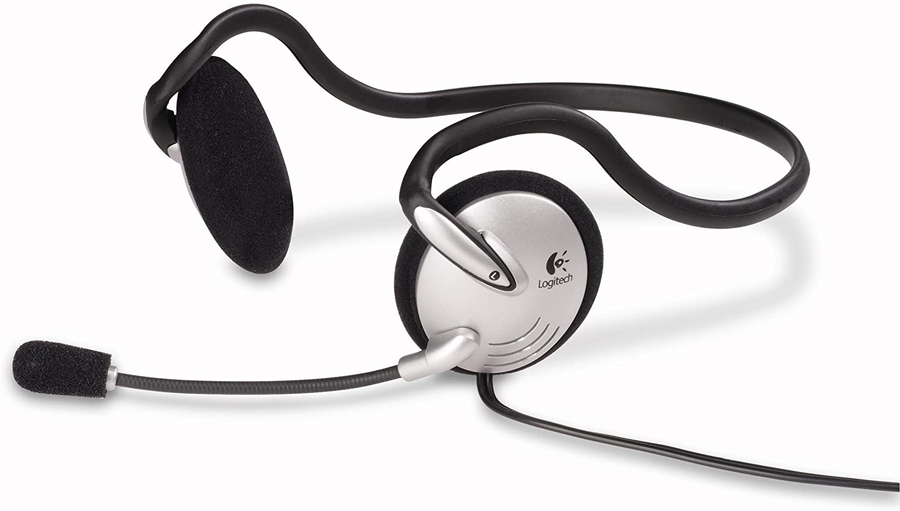Dit soort van hoofdtelefoon plaats je met een band in je nek. Hierdoor zal deze niet op je hoofd rusten! Deze zijn uitermate geschikt voor fotogenieke mensen die plannen nog enkele foto's op instagram te plaatsen zonder dat hun haar in de war zit.
Over het hoofd:
Dit is de klassieke hoofdtelefoon die je gewoon op je hoofd plaatst. Niets meer, niets minder! Vaak zal dit ook de meest comfortabele hoofdtelefoon zijn, aangezien deze mooi blijft zitten op het hoofd.
Achter het oor:
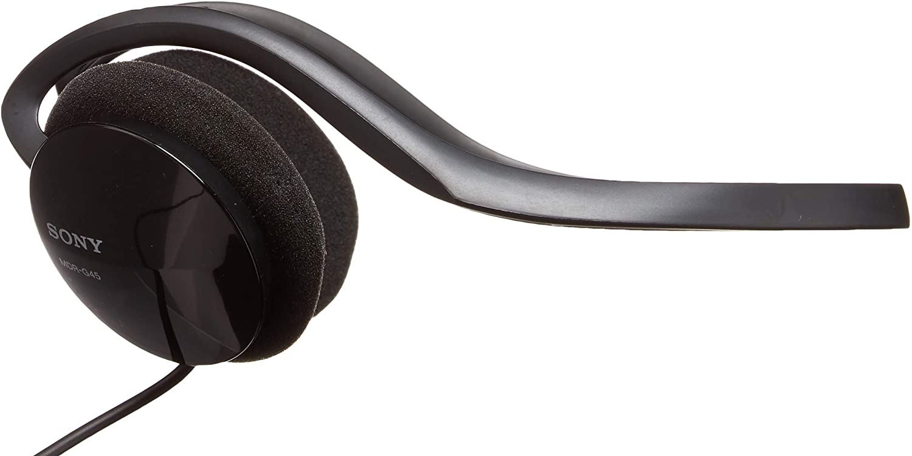Deze hoofdtelefoon draag je door deze achter het oor te bevestigen met een haakje. Hier zie je dus ook dat je maar 1 oorkussen hebt. Je hoort dus met andere woorden het gesprek maar in 1 oor. Toch is deze het meest geschikt als je ook onderling moet overleggen met andere collega's tussen de gesprekken door. Deze zal ook minder comfortabel zitten.
In het oor:
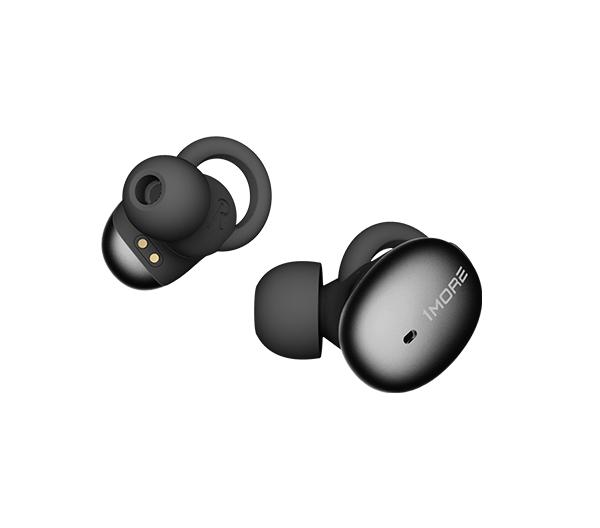Dit soort van hoofdtelefoon plaats je in het oor. Je hebt dus geen band meer aan de hoofdtelefoon die je om het hoofd plaats. Deze oortjes hebben in deze situatie meer nadelen dan voordelen. Ze zitten niet goed voor lange duur en kunnen dan ook schadelijk zijn voor het gehoor. Toch heb ik deze in de lijst erbij gezet om niemand te benadelen!
De oorschelpen van de hoofdtelefoon zijn de zijkant waar het geluid uitkomt! Deze kun je dan over, in of op het oor plaatsen. Bij een hoofdtelefoon kun je dan kiezen tussen 1 of 2 oorschelpen.
1 oorschelp:
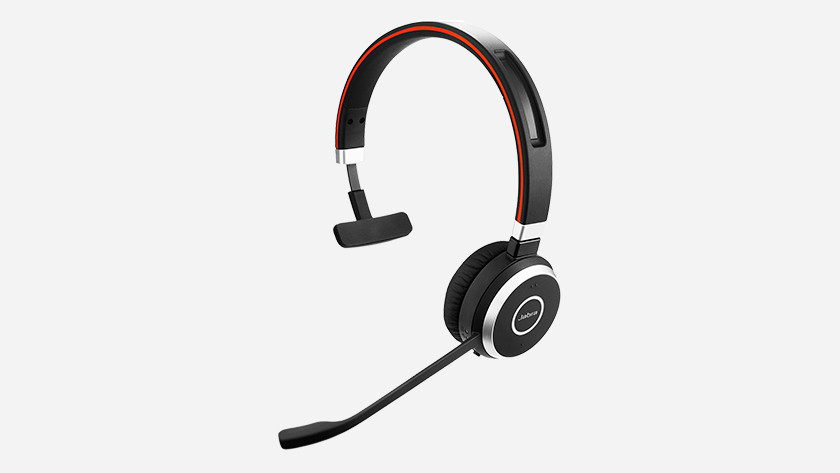Hier heb je dus slechts 1 oorschelp ter beschikking! Zo hoor je het geluid enkel in 1 oor, terwijl je andere oor vrij is voor andere geluiden op te vangen.
2 oorschelpen:
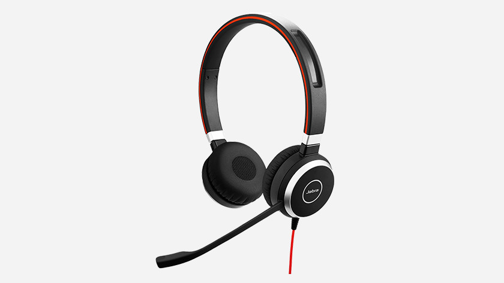Bij dit type van hoofdtelefoon zitten beide oren in de oorschelpen. Hierbij zal je dus veel minder last ondervinden van omgevingsgeluiden, aangezien beide oren bedekt zijn door de hoofdtelefoon.
Dit is een open, optionele vraag waar u nog eventuele andere suggesties of wensen kunt vermelden.
Dit is een open, optionele vraag waar u nog verduidelijking/opmerkingen kwijt kan. Als u een verduidelijking/opmerking wenst te geven over een bepaalde vraag of meerdere vragen, vergeet dan zeker het nummer van de vraag ook niet te vermelden.
Als dispatcher heb je een zware job! Zeker qua fysiek kan dit zijn tol eisen op het lichaam. Het is een job waarbij je bijna altijd op een stoel zit. Daarom is het veel gezonder voor het lichaam om regelmatig wat beweging te hebben, hoe klein deze beweging ook is! Vandaar dat er op de markt ook bureaus worden gemaakt die je naar boven kan schuiven. Zo kan je rechtopstaand verder werken. Alles schuift dan gewoon mee naar boven! Zo kun je toch je benen even strekken terwijl je toch je bureau niet hoeft te verlaten! Dit is ook totaal niet verplicht om te gebruiken. Als je omwille van gezondheid of andere redenen niet kan of wenst te gaan staan, hoef je dit ook niet te doen! Onderstaande video is een korte demo dat aantoont hoe het kan zijn om een bureau zittend of staand te gebruiken!
Deze vraag heeft voornamelijk betrekking tot het hebben van kastjes en schuiven op de bureau! Op zich willen we gaan naar een clean desk principe waarbij er zo weinig mogelijk zaken nog echt op de bureau zelf liggen. Deze vraag dient dus ook zodat ik een zicht krijg op het aantal spullen die gebruikt worden.
Soms kan het gewoon zijn dat het lot jou haat en besluit om die beker water te laten omver vallen op je bureau. Ondertussen heel dat toetsenbord nat, eventueel kapot zelfs, water dat van de bureau drupt op de grond,... Dit kan ook door onhandigheid zijn, maar laten we toch de schuld maar op het lot stoppen! Om dit te voorkomen, kunnen we een bekerhouder plaatsen op de bureau! Dit verlaagt de kans dat je beker of flesje de strijd verliest met de zwaartekracht en omver valt. Dit zou er zo kunnen uitzien, al heb je deze in verschillende kleuren en formaten:
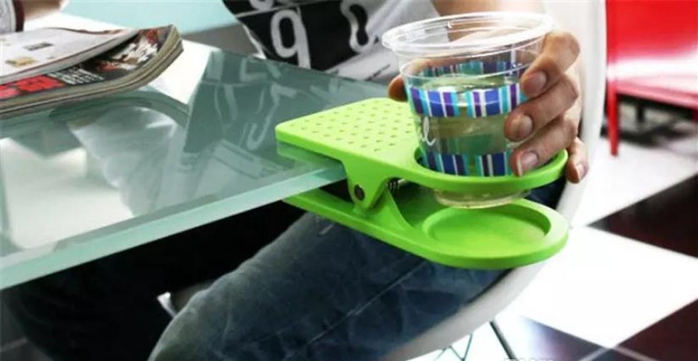Mijn kennis omtrent bureaustoelen en dergelijke zijn erg beperkt. Vandaar dat ik deze vraag volledig openlaat! Zaken die je zelf belangrijk vind bij een bureaustoel kun je hier plaatsen zodat we hier rekening mee kunnen proberen te houden. Deze vraag kun je ook open laten als je hier niets speciaal wil/weet!
In de avond kan het wel eens zeer donker worden. Vandaar dat Sir Humphrey Davy in de jaren stilletjes het elektrische licht heeft uitgevonden. Hierbij vroegen we ons af of je eerder een persoonlijk licht op de bureau verkiest of een algemeen licht in de meldkamer. Het voordeel van een persoonlijk licht is dat u zelf kiest wanneer deze aan of uit staat en (als u hiervoor kiest) de intensiteit en kleur van de lamp!
Tegenwoordig bestaan er allerlei lampen waarbij u keuzes kunt maken in intensiteit van het licht of zelfs de kleur! Zo kan u bv. in de nacht kiezen voor een zachter licht.